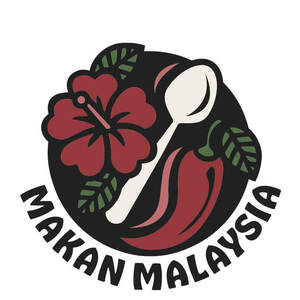

Trade Mark Journal No.2025/027 4 July 2025
UK00004224932 26 June 2025 (16,25,29,30,35,43)
Mark 1
Mark 2

- Class 16
- Printed matter; Books; Printed recipe cards; Printed recipes sold as a component of food packaging; Cookbooks; Binders; Stickers; Paper for wrapping and packaging; Cookery books; Printed recipe cards; Instructional and teaching material [except apparatus]; Printed step-by-step cooking guides in the form of a brochure or individual recipe cards; Stationery; Packaging materials; Printed publications; Newsletters; Printed newsletters; Adhesives for stationery or household purposes; Writing paper; Envelopes; Notebooks; Diaries; Pens, pencils, cases therefor, erasers, crayons, markers, colouring pens, coloured pencils, pen sets, quill pens, painting sets, chalk and chalkboards; Novelty pens; Calendars; Paper napkins; Paper place mats; Paper table cloths; Paper cake decorations; Instructional and teaching materials; Magazines, newspapers, newsletters, periodicals, comics, pamphlets; Coasters made from cardboard or paper; Paper and plastic bags; Printed matter relating to food and drink; Instructional and teaching material relating to food and drink; Printed instructional and teaching materials in the field of food, cooking, recipes, home and lifestyle; Books in the field of food, cooking, recipes, home and lifestyle; Recipe books; Printed menus; Magazines in the field of food, cooking, recipes, home and lifestyle; Printed periodicals in the field of food, cooking, recipes, home and lifestyle; Pamphlets in the field of food, cooking, recipes, home and lifestyle; Manuals in the field of food, cooking, recipes, home and lifestyle; Catalogues in the field of food, cooking, recipes, home and lifestyle; Carrier bags.
- Class 25
- Clothing; Footwear; Headgear; Chef's whites; Aprons; Ready-to-wear clothing; T-shirts; Shirts; Batik shirts; Trousers; Jumpers; Sweaters; Parkas; Knitwear [clothing]; Hats; Caps; Beanie hats; Casual wear clothing.
- Class 29
- Food kits to prepare and make Malaysian and Malaysian-inspired food, including all preparations thereof; Prepared meals consisting primarily of meat substitutes; Prepared meals consisting principally of game; Prepared meals consisting primarily of meat, fish, poultry or vegetables; Prepared meals consisting primarily of meat, fish, poultry or vegetables mixed with noodles; Prepared Malaysian curry meals; Malaysian prepared meals consisting primarily of a curry base with chicken; Pre-cooked curry dishes; Pre-cooked curry stews; Pre-cooked Malaysian-inspired meals consisting of rice and vegetables and/or meat and/or seafood and/or plant-based meat replacements; Prepared curry meals consisting of vegetables, plant-based meat replacements and imitation meat; Pickles; Pickled vegetables; Pickled fruit and vegetables; Vegetable fritters; Potato Snacks; Vegetable-based snack foods; Flavoured nuts; Edible nuts; Frozen prepared vegan, meat, game, poultry meals; Pre-cooked curries; Pre-cooked meals; Bean-based dips; Vegetable-based dips; Vegetable salads; Fruit salads; Pre-cut vegetable salads; Prepared salads; Pre-cookied curries consisting primarily of tempeh; Prawn fritters; Anchovies; Pickled anchovies; Dried anchovies; Pre-cooked vegan meals; Jams; Kaya [coconut jam]; Cream desserts; Chilled dairy desserts; Dairy-based desserts; Fruit-based desserts; Soya -based desserts; Desserts made from milk products; Desserts made from milk substitutes.
- Class 30
- Sambal; Sambal oelek being condiment; Condiments; Sauces; Spice mixes; Spices; Sambal cheese brioche buns; Sambal-based cookies; Sambal coated almonds; Sambal coated nuts; Pineapple fritters; Cakes; Confectionary; Chocolate; Biscuits; Rice; Coconut rice; Spiced rice; Bread; Paratha [flatbreads]; Spice rubs; Spice blends; Marinades; Marinades containing seasonings; Marinades containing spices; Salsas; Sweet sauces; Savoury sauces; Relish; Chutneys; Foodstuffs made from dough; Sweet glazings and fillings; Frozen prepared foodstuffs; Preparations for making sauces; Flavourings made from fruits or vegetables; Prepared meals and snacks for human consumption but not included in other Classes; Prepared meals and snacks included in Class 30; Mixes for sauces; Frozen confections; Frozen pastries; Rice products for food, including rice-based snack food; Dishes made from rice flour; Rice dishes; Curry powders, curry pastes and curry sauces; Cooking sauces and cooking pastes; Flavourings made from fruits or vegetables; Pastry-based snacks filled with meat, vegetables, potatoes, rice, lentils or soya, all frozen, chilled or at ambient temperature; Pastry and pastry products; Bakery products and bakery goods; Flour and preparations made from cereals; Bread, pastry and confectionery; Confectionery products; Sweet bakery goods; Prepared desserts; Buns; Food package combinations consisting primarily of bread, crackers and/or cookies .
- Class 35
- Organisation of events, exhibitions, fairs and shows for commercial, promotional and advertising purposes; Wholesale services connected the sale of Malaysian food; Distribution of products for advertising purposes; Online wholesale and retail store services in connection with the sale of Malaysian food, pre-prepared meals and drinks; Organisation, operation and supervision of loyalty and incentive schemes; The bringing together, for the benefit of others, of a variety of food and drink, paper and cardboard, books, printed matter, instructional and teaching material (except apparatus), recipe cards, plastic materials for packaging (not included in other classes), recyclable paper and cardboard for packaging and cardboard boxes, enabling customers to conveniently view and purchase those goods by mail order or by means of telecommunications or from an Internet web site; Retail services including online and Internet based retail services, all connected with the sale of Malaysian prepared meals, food products and drinks; Retail services connected with the sale of subscription boxes containing Malaysian food and drink; Retail services connected with the sale of subscription boxes containing food and drink, including recipe cards and cooking instructions; Advisory, consultancy and information services relating to all the aforesaid.
- Class 43
- Food and drink preparation services; Preparation of meals; Catering services for weddings; Advice concerning cooking recipes; Consultancy services relating to food preparation; Personal chef services; Catering services for private events and parties; Consultancy services in the field of food and drink catering; Consulting in the field of menu planning for others; Providing information in the fields of food and beverage preparation, cooking, recipes, ingredients, and cookware techniques via a website on global computer networks; Providing personalised meal planning services via a website; Provision of a private supper club service; Outside catering; Food and drink catering; Malaysian food and drink takeaway services; Malaysian food and drink mobile catering services; Providing Malaysian food and drinks via mobile truck; Pop-up street food restaurant and catering services providing; Tea room services; Restaurant services.
MAKAN MALAYSIA UK LLP
Representative: Trademark Brothers Ltd.